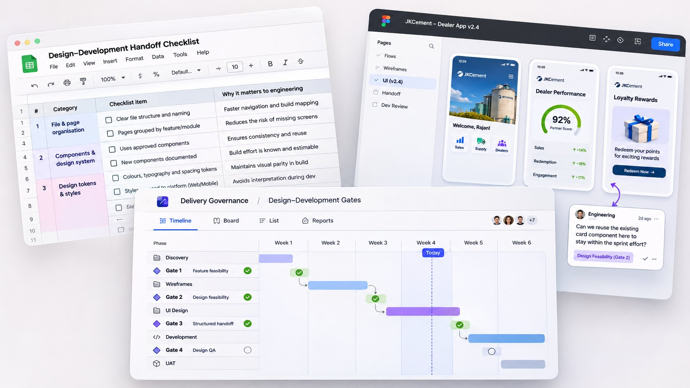

Making design buildable
Introduced mandatory design–development gates to surface technical feasibility, content, and delivery risks before they became expensive downstream rework.

Outcomes
Reduced downstream rework
Identified feasibility issues before design commitments translated into expensive development changes.
Improved delivery predictability
Surfaced technical dependencies and implementation risks earlier, reducing unexpected disruptions to committed timelines.
Cleaner design–development handoffs
Reduced ambiguity through clearer specifications, documented edge cases, and structured engineering acceptance.
Better protection of project margins
Reduced exposure to unplanned, unbillable development effort caused by feasibility gaps and incomplete handoffs.
The problem
How work flowed before
- Design
- Client presentation
- Client approval
- EngineeringFeasibility checked here, after client signed-off on the designs
Copy often arrived after UI development began
Design and development operated as separate functions. Designs were presented to clients, approved, and only then introduced to engineering. By that point, feasibility concerns could no longer influence decisions without disrupting commitments.
Handoff had become a file-sharing exercise rather than a delivery milestone. Copy often arrived after UI development began, and real content broke layouts built around placeholders. The resulting rework was rarely billable, directly affecting project margins.
manweeks of unplanned development effort on one complex engagement.
The disconnect was cultural as well as operational.
saw engineering feedback as compromising their work.
received designs without sufficient consideration for implementation effort.
The underlying problem was systemic: critical delivery decisions depended on individual experience and project-specific habits, with no consistent mechanism to validate feasibility, manage dependencies, or establish readiness.
The gates
I redefined handoff as a governed delivery milestone, not the moment design shared its files.
Each gate was positioned at a point where feedback could still change the outcome without incurring significant rework. Project managers were accountable for adherence, and I joined internal kickoffs for design–development projects to establish expectations and walk teams through the process.
Feature feasibility
At the end of discovery, development reviews the information architecture and feature list to identify technical constraints and dependencies before scope is committed.
Content readiness
Real copy is introduced at the wireframe stage wherever possible. Unresolved content is treated as a delivery risk, not silently passed to development.
Design feasibility
Before client presentation, development reviews wireframes and UI for implementation complexity, effort, and technical constraints.
What this gate catchesStructured handoff
Handoff is complete only when engineering confirms readiness against the shared checklist, not when design shares files.
Download the checklist (.xlsx)Design QA
Designers review the live build against approved designs to identify visual and interaction inconsistencies before release.
Gate 2The questions the design feasibility review asks
- Can this be implemented within the agreed scope and timeline?
- Can an existing component or library achieve the same design intent?
- Do complex interactions, animations, or custom widgets introduce disproportionate build effort?
- Which technical decisions or dependencies must be resolved before design is committed?
The objective wasn’t to reduce design ambition. It was to preserve the intended experience while making implementation effort, trade-offs, and risks visible before commitments were made.
What the design feasibility gate catches
The handoff checklist
I operationalised Gate 3 through a shared handoff template that every project copied. It replaced subjective judgments of readiness with explicit documentation and engineering acceptance.
Project summary
A consolidated index of project files, links, owners, and references.
22-point readiness checklist
A structured review across seven categories, with the rationale behind each requirement to help designers understand its impact on engineering.
- File and page organisation
- Components and design system
- Design tokens and style guide
- Responsive behaviour
- Screens and states
- Annotations and documentation
- Assets and exports
Sign-off and handover log
A screen-by-screen record of review status, approvals, and handover dates.
Knowledge-transfer calls were recorded and saved to a shared drive. Developers documented edge cases and open questions directly in the design file, keeping context connected to the work.
Download the checklist (.xlsx)Making it stick
- 1
Pilot first.
Ran the gates on four projects, gathered feedback on overhead and friction, and refined the process before rolling it out studio-wide.
- 2
Explain the why, then hold the line.
When teams began bypassing design feasibility reviews, I reinforced adherence through PM communication grounded in actual examples of the risks those reviews prevented. Scheduling joint reviews became an explicit PM responsibility.
- 3
Make review easy.
Introduced a dedicated channel for screen-review requests, reducing the coordination overhead of engaging development for a feasibility check.
- 4
Learn on purpose.
Established the studio’s first retrospectives on development projects. PMs captured weekly observations across scope changes, estimation gaps, handoff friction, resourcing, sales support, context gaps, and gate adherence to identify recurring patterns and opportunities for improvement.
The operating model
I structured the workflow around five interconnected principles:
Prevent
Identify feasibility, content, and dependency risks before they become expensive delivery problems.
Standardise
Define what good handoff and design QA look like through mandatory gates and a shared checklist.
Assign accountability
Make PMs responsible for gate adherence, with design and development accountable for the quality and completeness of their respective inputs.
Observe
Capture recurring friction, estimation gaps, scope changes, and exceptions through weekly project retrospectives.
Improve
Translate project-level lessons into changes to the shared workflow, continuously feeding back into prevention.
Handoff is no longer complete when design shares the files. It is complete when engineering accepts them.